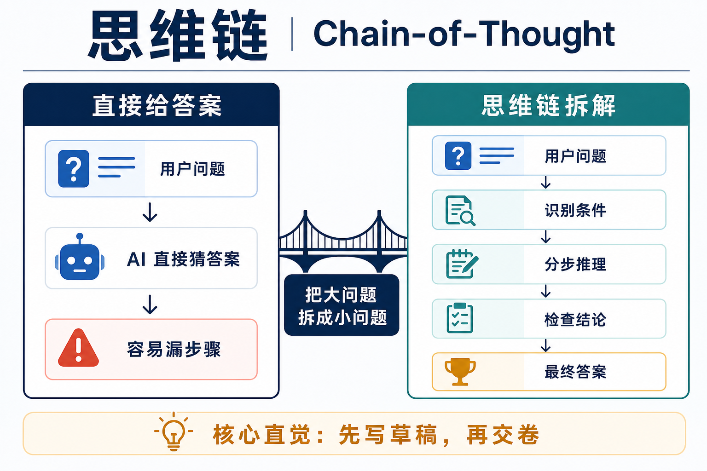
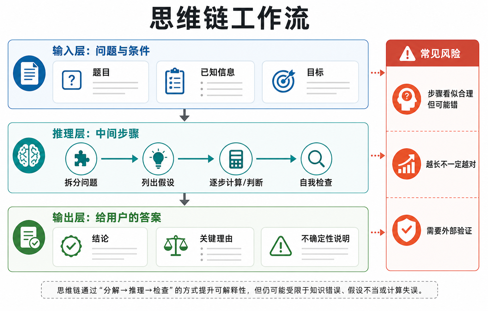

1. 为什么这个概念重要？
因为很多真实问题不是“知道一个事实”就能回答，而是要经过几步推理。
如果你问 AI：“小明买了 3 盒铅笔，每盒 12 支，送给同学 8 支，还剩多少支？”一个模型可以直接猜“28”，也可以先算 3 × 12 = 36，再算 36 - 8 = 28。答案一样，但第二种方式更可靠，因为中间过程能暴露错误。
这就是思维链的价值：它把一个大问题拆成可检查的小环节。对数学题、合同分析、代码调试、旅行规划、医学问诊初筛、客服流程判断来说，中间步骤往往比最后一句答案更重要。
AI 行业离不开它，是因为大模型的能力正在从“语言补全”走向“复杂任务处理”。当 AI 要做计划、调用工具、写代码、检查证据时，它不能只会说一个漂亮结论，还要有一条相对清楚的推理路线。
2. 一个直观类比：考试时先写草稿
想象一个高中生做数学大题。老师不是只看最后答案，还要看解题过程。为什么？因为过程能说明这个学生是否真的理解：条件有没有抄错，公式有没有用对，中间计算有没有漏掉。
思维链就像 AI 的“草稿纸”。普通回答像学生直接写“答案是 42”；思维链回答像学生先写：“题目给了三个条件，先算总量，再减去消耗，最后检查单位。”
这并不是让 AI 变成有意识的人，而是让它在生成答案前，多走一段“把问题说清楚”的路径。它像 GPS 导航：直接告诉你“到达目的地”没有意义，真正有用的是“先上高架，再转主路，最后右转”。路线清楚，出错时也更容易发现。

3. 工作原理：AI 怎么“分步想”？
最简化地说，思维链不是额外装了一个“逻辑芯片”，而是让模型生成更长、更有结构的中间文本。
读题：先抓住条件
模型先识别题目里有哪些已知信息、约束和目标。像学生审题，先把“已知”和“要求”圈出来。
拆题：把大问题变小
复杂任务被拆成几个子问题。比如“要不要投资一家公司”，可以拆成行业、财务、竞争、风险四部分。
推理：一步接一步
模型按顺序写出中间判断。前一步的结果会影响后一步，就像搭积木，下面歪了，上面也会歪。
检查：看是否自洽
模型可以检查单位、数字、前后矛盾和遗漏条件。但这种检查不是绝对可靠，仍需要外部事实和工具验证。

研究上，经典的 Chain-of-Thought Prompting 论文发现：给大模型展示几个“带中间步骤的例子”，可以明显改善算术、常识和符号推理任务。后续 Zero-shot-CoT 研究进一步发现，哪怕只是提示模型“让我们一步一步思考”，也可能让模型释放出更强的多步推理能力。
现代“推理模型”则把这件事做得更系统：模型会消耗额外的 reasoning tokens 来处理复杂问题。这些内部推理并不总是原样展示给用户，有些系统只返回总结后的推理说明，以减少误用和泄露风险。
4. 关键术语解释
| 术语 | 专业解释 | 白话解释 |
|---|---|---|
| 思维链 Chain-of-Thought | 让模型在最终答案前生成一系列中间推理步骤的提示或推理方式。 | 让 AI 先写草稿，把“为什么这么答”拆开说。 |
| 中间步骤 | 从输入到输出之间的推理片段、计算过程、假设和判断。 | 像做题时的每一行演算，不只是最后答案。 |
| Zero-shot-CoT | 不提供示范样例，只用一句分步思考提示来诱导模型推理。 | 不先教例题，只提醒 AI：“慢一点，一步一步来。” |
| Reasoning Tokens | 推理模型用于内部思考、规划和尝试多种解法的生成 token。 | AI 在幕后用掉的“草稿纸字数”，可能看不见，但会占成本和上下文空间。 |
| 自我一致性 | 让模型生成多条推理路径，再比较多个结果是否趋同。 | 像多做几遍同一道题，如果几次都算到同一答案，信心会更高。 |
| 验证器 Verifier | 用于检查候选答案或推理路径是否正确的模型、规则或外部工具。 | 像老师批改草稿，专门找哪一步错了。 |
5. 一个真实应用案例：AI 编程助手如何修 bug
假设你让 AI 编程助手修复一个登录页 bug：“用户输入正确密码后仍然被踢回登录页。”如果模型直接改代码，很可能只是在某个文件里乱试。
更好的做法是使用思维链式流程：
- 先复述现象：正确密码后仍跳回登录页，说明认证成功与会话保持之间可能断裂。
- 列出可能原因：cookie 没写入、token 过期、前端路由守卫误判、后端 session 配置错误。
- 逐项验证：看网络请求、响应头、浏览器存储、服务端日志和路由逻辑。
- 提出最小修复：只改证据指向的那一处，而不是全局重构。
- 运行测试：确认登录成功、刷新页面仍保持登录、错误密码仍被拒绝。
这就是思维链在工程里的实际价值：它不是为了让答案显得更长，而是把“猜测”变成“可检查的排查路线”。在客服、财务分析、法律检索、医疗辅助、投研问答中，道理相同：先把证据和判断路径摆出来，再给结论。
6. 常见误区
- 误区一：思维链越长，答案越正确。
不一定。长推理可能只是更长的错误。真正重要的是步骤是否必要、证据是否可靠、结论是否能被验证。 - 误区二：AI 写出推理过程，就说明它真的像人一样思考。
不能这么理解。思维链是模型生成的文本和内部计算过程，不等于人类意识，也不等于真正理解。 - 误区三：把完整思维链都展示给用户总是更好。
不一定。完整内部推理可能冗长、含有错误尝试，也可能暴露安全敏感信息。很多产品更适合展示“关键理由”或“推理摘要”。 - 误区四：思维链能解决幻觉。
不能。它能让错误更容易被发现，但如果基础事实错了，分步推理仍然会在错误事实上继续前进。 - 误区五：所有问题都需要思维链。
不需要。问“北京今天星期几”这种直接问题，用长推理反而浪费。复杂计算、规划、排查、权衡才更适合。
7. 总结：3句话讲清核心认知
思维链让 AI 在回答前先写“草稿”，把复杂问题拆成一串中间步骤。
它最适合数学、代码、分析、规划、排查这类需要多步判断的问题。
思维链提高可检查性，但不能保证正确；事实、工具和验证仍然不可缺。
8. 复习问题
- 为什么“直接给答案”和“先写中间步骤”在简单问题上差别不大，但在复杂问题上差别很大？请用考试草稿纸类比解释。
- 如果 AI 在合同审查里写出一长串看似合理的推理，你还需要检查哪些东西，才能判断它是否可靠？
- 为什么很多产品不直接展示模型的完整内部思维链，而是展示“关键理由”或“推理摘要”？这样做有什么好处和代价？
9. 来源与说明
本文面向非技术读者，采用生活化类比解释，事实依据主要来自以下英文一手资料和研究论文：
- Wei et al., Chain-of-Thought Prompting Elicits Reasoning in Large Language Models, arXiv:2201.11903
- Google Research: Language Models Perform Reasoning via Chain of Thought
- Kojima et al., Large Language Models are Zero-Shot Reasoners, arXiv:2205.11916
- OpenAI API Docs: Reasoning models
- Anthropic Claude Platform Docs: Extended thinking
阅读边界：思维链可以提升复杂任务的可解释性和成功率，但不同模型、不同任务、不同产品策略会影响“是否展示推理过程”以及“展示到什么程度”。本文不把思维链等同于人类意识，也不把分步文字当作正确性的证明。